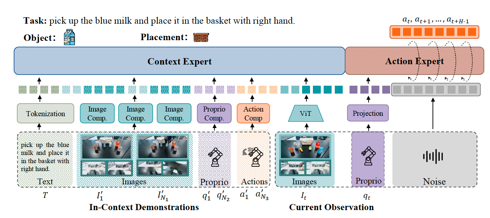
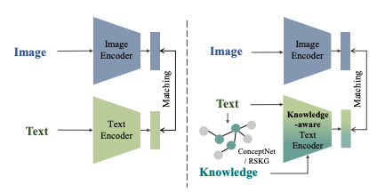
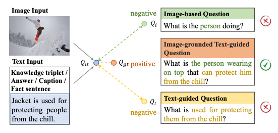

Research
|
|
My current work focuses on in-context learning and generalization in embodied AI.
More broadly, I am interested in multimodal learning, vision-language models,
representation learning, and reliable decision-making systems.
|
|

|
Recent Work on Embodied AI and Robot Learning
Manuscripts under review.
|
|

|
Knowledge-aware Text-Image Retrieval for Remote Sensing Images
Li Mi, Xianjie Dai, Javiera Castillo-Navarro, Devis Tuia
IEEE Transactions on Geoscience and Remote Sensing (TGRS), 2024
paper
|
|

|
ConVQG: Contrastive Visual Question Generation with Multimodal Guidance
Li Mi, Syrielle Montariol, Javiera Castillo-Navarro, Xianjie Dai, Antoine Bosselut, Devis Tuia
AAAI Conference on Artificial Intelligence (AAAI), 2024
paper
/
project page
|
Education
|
|
École Polytechnique Fédérale de Lausanne (EPFL)
M.Sc. in Computer Science
The Hong Kong Polytechnic University
B.Eng. (Hons) in Electronic and Information Engineering
|
Misc
|
|
My research experience spans embodied AI, vision-language learning,
biomedical imaging, and multimodal representation learning.
|
|